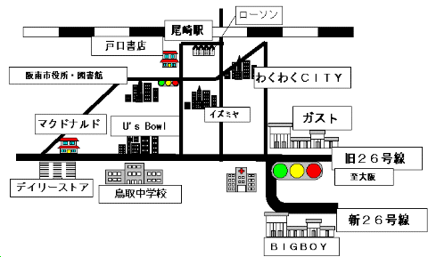

|
阪南市買い物事情 |
|
尾崎周辺地図 ※縮尺はむちゃくちゃです。  基本は遠出と近所
阪南市のウリの一つは、ここ難波まで電車一本で来れるということです。難波という場所に価値がありますから、これは非常に大きなメリットでしょう。 お買い物をするとき、阪南市民のパターンはおそらく三つ。近所のスーパーまで買い物に出かける。阪南市内の大型店まで車で出る。電車で遠出する。の３パターンでしょう。阪南市民で難波は庭だと公言する人間は少なくありません。では、間の泉佐野市や貝塚市や岸和田市へ買物へ出たりするか？ まあ、しませんね。別にそこまで行かなくても、近所のお店で間に合いますからね。近所で買物を済ませられなければ、大阪市内まで出る、が私の基本です。また、これは大阪府民なら極々一般的な行動だと思います。 |
|
まずは郊外型大型店舗
尾崎駅周辺の人ばかりでなく、結構あちこちから車で来ています。駐車場は２０００台程とめられますが、休日は人でいっぱいということになります。阪南市内に住むことになれば、ここに生命を依存するかもしれません。残念ながらパソコン関連はあまり強くなく、その分野では日本橋まで出ることになります。 同様なお店として、オークワのご近所に、イズミヤ尾崎店があります。先のわくわくＣＩＴＹができるまでは、こちらの方が優勢でしたが、わくわくＣＩＴＹ完成以後はなんか影が薄いという印象を持っています。昔は、尾崎にお買物にくればこの店へ来たもんですが、最近は滅多に行かないということだけ書いておきます。
余談ですが、子供の頃は駅で買い物袋を抱えたお子様連れのおかーさんをよく見たもんですが、最近は見ません。車が普及したんですね。多分。 |
|
コンビニエンスストア
ということで、コンビニは車でお出かけするところです。各最寄り駅には駅前か、駅近くにコンビニがあるので、私自身はそれほど不便は感じていません。が、大阪市内にいた時のように、喉が渇いたからコンビニへ行こうとは思えないですね。車でもあったら別なんでしょうけれど･･
|
|
ご飯を食べる ここの住民の基本は、家でご飯を食べるということみたいで、家ばっかりで食事をするところはあんまりありません。うちの場合、ご家族揃って車で外食でも・・・となると、ほとんど国道２６号沿いのガストになってしまいます。後は同じく２６号沿いのＢＩＧＢＯＹ。ご飯食べるところは少ないと思いますが、これはベッドタウンの宿命でしょう。両方とも阪南市の北の端になるので、こうなると泉南市内や泉佐野市内まで突入ということになります。 ちょっと食べるとなると、マクドナルドか、モスバーガーでしょうかね。これらも国道２６号沿いにあります。 その他食事をする場所というと、先ほどのわくわくＣＩＴＹの敷地内にある専門店。うどんのチェーンで有名な杵屋だとか、モスバーガーとか。あとは駅前のケンタッキーだとか。なんで思い付かないんだろうと思ってみると、僕が夕食を食べて帰る時は、阪南市に突入する前に食べてしまうんですよね。 とは言っても、近所で美味しい店というのは結構あるはずなので、この辺りは私も教えてもらいたいところ。食べるところがないというのは一般的な阪南市民の声を反映しているとは思いますが、実状を反映しているかどうかは分かりません。 |
| 銀行 紀陽銀行、泉州銀行、第三銀行など地方銀行の支店は数多くありますが、都市銀行の支店は一行もありません。尾崎駅構内に住友銀行のキャッシュコーナーがあるのみで、一番近い都市銀行の本支店は泉南市内になります。 大阪市内の都銀の本支店がAM8:00～PM9:00とかいうタワケタ営業時間に営業しているのを見ると少々物足りない気分になります。大阪市内で買物が多くなる理由その二です。 ところが、スーパーなどにあるキャッシュコーナーは地方銀行の分しかないので、地元を足場にしているものとしてはそれでいいとのことです。
|
|
町の情報センター－書店
さて、左は旭屋書店なんばＣＩＴＹ店。地元になければ難波まで出るの典型例としてあげました。大阪ではかなり良い部類に入る本屋です。また、日本橋へ行けばパソコン関連はパソコンショップの方が充実しているので、どうしても難波まで出て来て買いますね。カードも使えるし・・ |